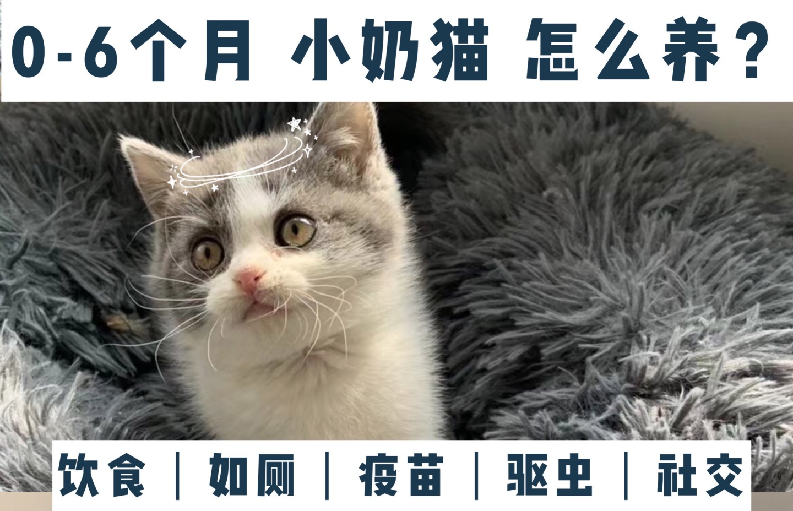

0-6个月的幼猫怎么养？新手养猫攻略

家里母猫生了小奶猫怎么养？路边捡到小奶猫怎么办？养小奶猫需要注意什么呢？小奶猫看起来实在是太脆弱了，连照顾都无从下手，铲屎官表示很无措。今天出一篇小奶猫养护指南，给大家盘点样奶猫的那些小技巧
0-1个月
饮食：以母乳喂养为主，母乳里含有大量这个时期猫咪所需的营养，可以增强猫咪体抗力；没有母乳的话用猫咪配方奶粉，代替母乳也是可以的
✨猫咪奶粉推荐：petag羊奶粉，配方贴近母乳，营养比较均衡，羊奶粉猫咪喝了不容易出现乳糖不耐受
奶猫喂养小知识1：给小奶猫冲泡的猫奶加热到38度左右就可以了，每次喂5-10ml，一天喂6次左右
保暖：刚出生没多久的猫咪还不能适应外界的温度变化，产热比较少，要注意保暧�
猫咪保暖小技巧：在猫窝或者纸箱里放一张小毯子、暖手袋甚至是加了热水的矿泉水瓶都是可以的，温度要适中（29-32度）✅，太冷或太热都有可能对猫咪不利哦（另外，不建议给猫咪穿衣服，因为这个阶段的猫咪行动能力还没有发育完全，给猫咪穿衣服会让猫咪行动不便甚至影响发育哦❗️）
如厕：这时候的猫咪还不会自动排便，可以用沾湿的棉球擦拭猫咪肛门附近刺激引导猫咪排便，每天3-4次，每次擦5-8下即可
1-2个月
饮食：前期还是建议母乳喂养，猫咪一个半月左右的时候可以慢慢从母乳/奶粉过渡到喂猫粮，用冲泡好的奶粉把猫粮泡软喂猫咪，猫粮的比例可以逐步增多
奶猫喂养小知识2：过渡期给猫咪泡的猫粮一定要泡透，⚠“夹生”的猫粮不利于消化呦～
✨幼猫粮推荐
✅江小傲幼猫粮（我家崽小时候吃的就是这款，高肉无谷，里面有鲣鱼片，猫咪很爱吃；添加了奶酪粉，对肠胃比较好，28块钱一斤，性价比很高）
✅冠能幼猫粮（朋友家崽崽小时候吃的一款，添加了牛乳衔接母乳保护，可以增强猫咪体抗力✨）
如厕：正常情况下，这时的猫咪大小便已经能自理了，可以教它使用猫砂了
教猫咪使用猫砂：发现猫咪做蹲下、尾巴翘起等排便的举动时，把它带到猫沙盘里，用手指把猫砂刮到一边，直到猫咪照做；猫咪排便后如果没有掩埋，可以用手指铲一些猫砂盖到排泄物上，多重复几次猫咪就会跟着做了
✨猫砂推荐
✅pidan豆腐猫砂（除臭️，结团能力不错，可以冲厕所，清理起来比较方便）
✅n1豆腐砂（除臭性不错，吸水能力很靠谱，不容易被带出）
2-3个月
饮食：此时猫咪正是长身体的时候，需要大量营养，推荐粗蛋白含量较高的猫粮：纯福（酶解工艺还能保护小猫咪脆弱的肠胃）
疫苗：猫咪两个月大的时候就应该打疫苗了（猫三联、狂犬疫苗等）⚠这很重要哦！不打疫苗的话猫咪患猫瘟、细小等疾病的几率非常高，致死率也高，�不要抱有侥幸心理哦～
驱虫：幼猫满3月龄，体重>1公斤，猫咪体内体外都需要驱虫，�建议分开做，内外同驱对有些寄生虫不起作用哦（建议给猫咪一个月进行一次驱虫哦）
✨驱虫药推荐：常用的驱虫搭档是大宠爱（外驱）➕海乐妙（内驱），对常见的寄生虫都有效
社交：两个月大的时候是猫咪生长最快精力也超级旺盛，也是这时猫咪开始养成是否亲近人的性格；✅良性的互动和引导非常重要，一定要在这个阶段多和猫咪玩耍，玩耍和互动的时间决定了它们和你的亲近程度
3-6个月
饮食：这个时候猫咪应该已经完全断奶了，进入发育关键期✨，主食建议一天喂4次左右，可以增加罐头、冻干等零食补水发腮
补水：猫咪断奶后需要额外补水，喝水困难喵可以入一个流动饮水机，或者用冻干、猫草都可以引诱猫咪喝水呦
✨猫咪罐头、辅食推荐：
✅巅峰猫罐：他们家的猫罐比较出名，在业内也算是大品牌了，高蛋白0碳水、配料单一明了，猫咪吃着也放心
✅爱立方冻干：营养会比较全面，泡发后状态不错没有淀粉感，很适合用来引诱猫咪喝水哈哈
睡眠：幼猫每天大部分时间都会在睡梦中，睡眠时间在16个小时左右，所以给猫咪营造一个安静舒适的睡眠环境还是很有必要的✅；猫咪是典型的夜间生物，在晚上会活跃过头，我们可以在傍晚给猫咪喂食后陪猫咪玩一会儿，消耗它一部分精力就可以啦～